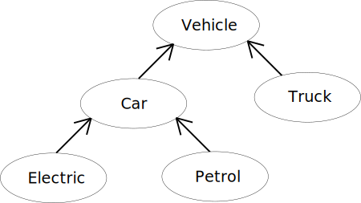

OOP Glossary

Abstraction
- Provides a separation from the user and the software, whereas in the calculator program the user knows to input a tuple and specify the operation to perform
but does not know the specific methodology in which the calculator is performing the operations and storage.
Arguments (Parameters)
- An argument is a set of parameters to be passed for creating an instance of class, or object, or data to perform a function.
Class
- A class contains methods and functions which create objects and their behaviors, such as the calculations class which stores the history of the calculators \
calculations.
Class Method
- Class methods refer to method calls which are performed on classes rather than an identifier (class instances). For the calculator program this can be viewed within
the calculation.py file.
Constructor
- A constructor is used to create an object. Constructors can take arguments to set initial values (such as Addition, Subtraction, Division, and Multiplication requiring
a tuple).
Design Patterns
- A type of Design Pattern (Behavior) used within the calculator program is the Command Pattern. Further reading of the various design pattern types can be viewed
here.
Encapsulation
- Encapsulation is utilized to group data and methods into one point of reference. The calculator program demonstrated encapsulation with the utilization of
class (such as calculations) which contain a set of methods that can store, recall, and evaluate other aspects of the initial tuple and subsequent tuples
passed to it.
Facade
- A facade is a type of pattern which masks more complex software functions. A clearer example of a facade is the calculator class, which references to more complex structural
code to perform the method calculation and store to history.
Factory
- For the calculator program, a factory method is utilized in the calculation.py file within the calculations directory as
the "create" method that allows for an calculation object (Addition, Subtraction, Division, Multiplication) to be made with a tuple of values.
Fixture
- A fixture is utilized, within the calculator program, as a way to establish sample data that is provided to each test without having to copy repetitive constructions of
the calculator Addition/Subtraction/Multiplication/Division objects.
Instantiation
- In the context of the calculator one instance of instantiation is related to the calculations class where an object is created with a defined name.
Method
- A method is a function/action that is performed on a variable with arguments (parameters) that can return output or change the state of the variable.
For the calculator program, there are methods which call methods from imported classes (add_number, subtract_number, ...)
Namespace
- A namespace is a defined region of visibility for a set of identifiers - such as the calculator being able to call Addition, Subtraction, Multiplication, and Division without
having to specify that it is within the calculator class.
Object
- An object is an instance of a class, such as an instance of the calculations class, or set of functions and methods referred to by a singular identifier.
Property
- Properties are the characteristics of an object, such that a calculator object can add_number, divide_number, subtract_number, or multiple_number. The object
can also return the last result. The properties of the calculator class are the tuple(s) of numbers and the result from the calculation performed on them.
Static
- Statics refer to a method (for the calculator program) or variable which can be referenced across any instances of the class the method is contained within.
Type Cast
- A type cast converts a given data type into another. For instance a list (mutable) can be cast to a tuple (immutable).
Type Hint
- A type hint is utilized by a function that accepts arguments to only allow specifically declared data types - such as the type hint for tuples.
Unit Test
- A unit test is often implemented to evaluate methods, or class for an interface, of a class. Unit tests were used within the calculator to demonstrate
the proper mathematical function, storage, and recall of given sets of tuples.